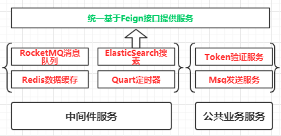

原文出处:本文由博客园博主知了一笑提供。
原文连接:https://www.cnblogs.com/cicada-smile/p/11795531.html
原文连接:https://www.cnblogs.com/cicada-smile/p/11795531.html
本文源码：GitHub·点这里 || GitEE·点这里
更新进度(共6节)：
04：中间件集成，公共服务管理
一、中间件简介
中间件是基础软件的一类， 属于复用性极高的软件。处于操作系统软件与应用程序的之间。是一种独立的系统软件，也可以是公共的服务程序，分布式架构系统借助中间件，可以在不同的技术之间共享资源，或者不同的服务直接传递信息。中间件位操作系统之上，管理计算机资源和网络通讯。是连接两个独立应用程序或独立系统的软件，例如：
- 消息队列中间件，在两个服务之间进行异步的消息传递;
- 数据缓存中间件，缓存整合系统的热点数据，提高程序的响应速度；
- Nginx中间件，提供负载均衡，服务代理，等功能；
二、公共服务简介
公共服务，顾名思义就是系统内通用的服务，例如用户身份验证，消息发送，监控预警，网关服务等。

该案例的中间件和公共服务，都是基于Feign接口统一的方式提供服务。
三、中间件集成
1、消息中间件
RocketMq简介
RocketMq 是一款分布式、队列模型的消息中间件，有两个核心角色：消息生产者和消息消费者。作为高并发系统的核心组件之一，能够帮助业务系统解构提高系统稳定性。
- 应用流程
- 消息生产者
@Component
public class MsgSendService {
@Resource
private ProducerConfig producerConfig ;
public void sendMsg (MsgWrap msgWrap) {
producerConfig.sendMsg(msgWrap.getGroup(),msgWrap.getTopic(),
msgWrap.getTag(),msgWrap.getContent());
}
}- 消息消费者
@Component
@Consumer(group = MsgRoute.husky_group_1,
topic = MsgRoute.husky_topic_1 ,
tag = MsgRoute.husky_tag_1)
public class UserSearchListener implements MsgReadService {
@Resource
private BookEsAnalyFeign bookEsAnalyFeign ;
@Override
public void readMsg(String msg) throws Exception {
LOGGER.info("【用户搜索消息监听 Msg】：{}",msg) ;
// 转发请求数据分析服务
bookEsAnalyFeign.sendBookEsMsg(msg);
}
}- 提供
Feign接口
@RestController
public class UserSearchController implements UserSearchFeign {
@Resource
private SendMsgService sendMsgService ;
@Override
public void sendBookSearch(String msgContent) {
MsgWrap msgWrap = new MsgWrap() ;
msgWrap.setContent(msgContent);
msgWrap.setGroup(MsgRoute.husky_group_1);
msgWrap.setTopic(MsgRoute.husky_topic_1);
msgWrap.setTag(MsgRoute.husky_tag_1);
sendMsgService.sendMsg(msgWrap);
}
}2、缓存中间件
Redis简介
Redis 是一个基于内存的高性能key-value数据库。对高并发系统提供各种场景的支撑：热点数据缓存，计数器，流量削峰等。
- 应用流程
- 封装操作方法
@Service
public class RedisServiceImpl implements RedisService {
@Resource
private RedisTemplate<Object,Object> redisTemplate ;
@Override
public boolean set(Object key, Object value) {
boolean redisFlag = true ;
try {
redisTemplate.opsForValue().set(key,value);
} catch (Exception e){
redisFlag = false ;
e.printStackTrace();
}
return redisFlag ;
}
@Override
public boolean set(Object key,Object value, long expire) {
boolean redisFlag = true ;
try {
redisTemplate.opsForValue().set(key,value,expire,TimeUnit.SECONDS);
} catch (Exception e){
redisFlag = false ;
e.printStackTrace();
}
return redisFlag ;
}
@Override
public String get(Object key) {
String value = null ;
try {
value = String.valueOf(redisTemplate.opsForValue().get(key)) ;
} catch (Exception e){
e.printStackTrace();
}
return value ;
}
}- 提供
Feign服务
@RestController
public class RedisController implements RedisFeign {
@Resource
private RedisService redisService ;
@Override
public boolean set (String key, String value) {
return redisService.set(key,value) ;
}
@Override
public boolean setTimeOut (String key, String value,long expire){
return redisService.set(key,value,expire) ;
}
@Override
public String get (String key) {
return redisService.get(key) ;
}
}3、搜素中间件
ES搜索简介
ElasticSearch是一个基于Lucene的搜索服务器。它提供了一个分布式多用户能力的全文搜索引擎，基于RESTful的 web接口。是当前流行的企业级搜索引擎。
- 应用流程
- 封装操作方法
@Service
public class BookInfoEsServiceImpl implements BookInfoEsService {
@Resource
private BookInfoRepository bookInfoRepository ;
@Override
public void batchSave(List<EsBookInfo> bookInfoList) {
bookInfoRepository.saveAll(bookInfoList) ;
}
@Override
public List<EsBookInfo> queryList() {
Iterable<EsBookInfo> bookInfoIterable = bookInfoRepository.findAll() ;
List<EsBookInfo> esBookInfoList = Lists.newArrayList(bookInfoIterable) ;
if (esBookInfoList == null){
esBookInfoList = new ArrayList<>() ;
}
return esBookInfoList;
}
@Override
public List<EsBookInfo> getByKeyWord(String keyWord) {
QueryStringQueryBuilder builder = new QueryStringQueryBuilder(keyWord);
Iterable<EsBookInfo> bookInfoIterable = bookInfoRepository.search(builder) ;
List<EsBookInfo> esBookInfoList = Lists.newArrayList(bookInfoIterable) ;
if (esBookInfoList == null){
esBookInfoList = new ArrayList<>() ;
}
return esBookInfoList ;
}
}- 提供
Feign服务
@RestController
public class BookInfoEsController implements BookInfoEsFeign {
@Resource
private BookInfoEsService bookInfoEsService ;
@Override
public void batchSave(List<EsBookInfo> bookInfoList) {
bookInfoEsService.batchSave(bookInfoList);
}
@Override
public List<EsBookInfo> queryList() {
return bookInfoEsService.queryList();
}
@Override
public List<EsBookInfo> getByKeyWord(String keyWord) {
return bookInfoEsService.getByKeyWord(keyWord);
}
}4、定时器中间件
Quartz简介
Quartz是由Java编写的开源任务调度的框架，通过触发器设置作业定时运行规则，控制任务的执行时间。其中quartz集群通过故障切换和负载平衡的功能，能给调度器带来高可用性和伸缩性。
- 应用流程
@Component("SendMsgJob")
public class SendMsgJob implements TaskJobService {
@Resource
private SendEmailFeign sendEmailFeign ;
@Override
public void run(String param) {
String nowDate = TimeUtil.formatDate(new Date(),TimeUtil.FORMAT_01) ;
LOGGER.info("SendMsgJob Execute Time：{}",nowDate);
sendEmailFeign.sendEmail("","定时邮件通知",""+nowDate);
}
}四、公共服务管理
1、Token服务
Token服务简介
通过一个公共的Token管理服务，对访问系统的用户身份做管理：身份令牌创建，校验，刷新等。
- 应用流程
- 封装操作方法
@Service
public class UserTokenServiceImpl implements UserTokenService {
@Resource
private UserBaseMapper userBaseMapper ;
@Resource
private RedisFeign redisFeign ;
@Override
public String getToken(String userName, String passWord) throws Exception {
UserBaseExample example = new UserBaseExample() ;
example.createCriteria().andUserNameEqualTo(userName) ;
UserBase userBase = selectByExample(example) ;
if (userBase != null){
String secrete = userBase.getPassWord() ;
if (secrete.equals(passWord)) {
// 返回 Token
String value = userBase.getId().toString() ;
String publicKeyStr = RsaCryptUtil.getKey(RsaCryptUtil.PUB_KEY) ;
String token = RsaCryptUtil.encrypt(RsaCryptUtil.createPublicKey(publicKeyStr),value.getBytes()) ;
String key = RedisUtil.formatUserTokenKey(userBase.getId()) ;
redisFeign.setTimeOut(key,token, Constant.USER_TOKEN_EXPIRE) ;
return token ;
}
}
return null;
}
@Override
public Integer verifyToken(String token) throws Exception {
String privateKeyStr = RsaCryptUtil.getKey(RsaCryptUtil.PRI_KEY) ;
String userId = RsaCryptUtil.decrypt(RsaCryptUtil.createPrivateKey(privateKeyStr),
RsaCryptUtil.parseBase64Binary(token));
return Integer.parseInt(userId) ;
}
@Override
public boolean refreshToken(String token) throws Exception {
Integer userId = verifyToken(token) ;
if (userId > 0 ){
String key = RedisUtil.formatUserTokenKey(userId) ;
// 判断Token 是否过期
String cacheToken = redisFeign.get(key) ;
if (StringUtils.isEmpty(cacheToken)){
return false ;
}
redisFeign.setTimeOut(key,token, Constant.USER_TOKEN_EXPIRE) ;
return true ;
}
return false ;
}
}- 提供
Feign服务
@FeignClient("MOPSZ-BASIS-TOKEN")
public interface UserTokenFeign {
/**
* 获取 TOKEN
*/
@PostMapping("/token/getToken")
RespObject getToken (@RequestParam("userName") String userName,
@RequestParam("passWord") String passWord) ;
/**
* 验证 TOKEN
*/
@PostMapping("/token/verifyToken")
RespObject verifyToken (@RequestParam("token") String token) ;
/**
* 刷新 TOKEN
*/
@PostMapping("/token/refreshToken")
boolean refreshToken (@RequestParam("token") String token) ;
}2、消息服务
Msg服务简介
在一个复杂的系统中，消息通知是一个必备模块，一般封装方式主要从下面两个方式入手，消息类型：用户消息，系统消息等，消息接收方式：邮件，短信，应用端等。
- 应用流程
- 封装邮件发送
@Service
public class SendEmailServiceImpl implements SendEmailService {
@Override
public void sendEmail(String receive, String title, String msg) {
try {
EmailUtil.sendEmail01(receive,title,msg);
} catch (Exception e){
e.printStackTrace() ;
LOGGER.info("邮件发送失败：{}",e.getMessage());
}
}
}- 提供
Feign服务
@FeignClient("MOPSZ-BASIS-MSGBOX")
public interface SendEmailFeign {
/**
* 发送Email
*/
@PostMapping("/msgBox/sendEmail")
void sendEmail (@RequestParam("receive") String receive,
@RequestParam("title") String title,
@RequestParam("msg") String msg) ;
}五、源代码地址
GitHub·地址
https://github.com/cicadasmile/husky-spring-cloud
GitEE·地址
https://gitee.com/cicadasmile/husky-spring-cloud：中间件集成，公共服务封装1.png)